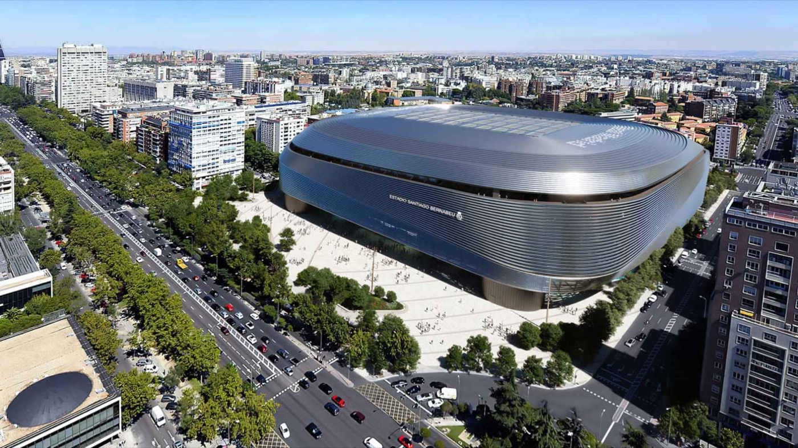

• 4 de diciembre de 1947 (originalmente como Nuevo Estadio de Chamartín).
• Nombre actual: Adoptado en 1955 en honor al histórico presidente del club, Santiago Bernabéu.
• Capacidad: Alrededor de 83.186 espectadores.
• Calificación UEFA: Categoría de élite (máxima distinción).
• Liga de España (Primera División) 36
• Copa de Europa / UEFA Champions League 15
• Copa del Rey 20
• Supercopa de España 13
• Supercopa de Europa 6
• Mundial de Clubes de la FIFA 5
• Copa Intercontinental 4
• Copa de la UEFA (UEFA Europa League) 2
• Copa Latina 2
• Copa de la Liga 1
• Copa Eva Duarte 1
• Copa Iberoamericana 1
En este enlace podras obtener mas informacion: Santiago Bernabéu